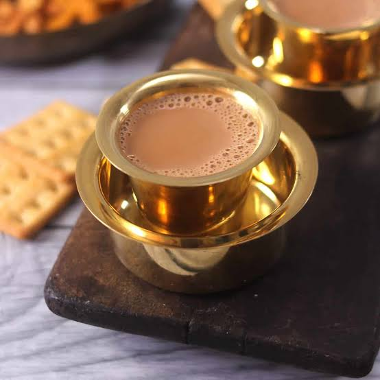

Home
coffee:

Incredients:
NOTE: the measurements mentioned are for 1 person
- tea powder(2 tsp)
- milk(50ml)
- sugar(2 tsp)
- water (50ml)
steps to be followed:
- take a container and pour the milk in to it
- leave it alone after turning the flame high till it boils
- in the mean time take another container and pour the water into it
- let it boil too and contine by adding tea powder and sugar afterwards
- add ginger if you want a strong tea
- filter the solution and add it with the milk which would have boiled by now
- serve it in an cup and enjoy and i recommend to drink it bfr it cools down